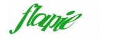
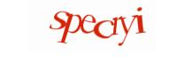
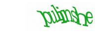

As Google's CAPTCHA goes, it's good. Of course. Google isn't known for turning out shoddy services. But as a weak-tea AI problem, Google's CAPTCHA looks, to this naive researcher, like a pretty good problem. Here are some samples:

I call this a "good" problem because it eliminates irritation for me (in that there are no extraneous lines or color variations, both of which would be boring things to solve) while being hard for OCR (because the characters are deformed and often overlap, the "words" are not dictionary words, the length of the words varies, and so on). Another interesting aspect is that the target strings are meant to be easy to remember, while still not being actual words. So there are syllable rules to narrow down possible solutions, but the rules don't seem inviolable -- very soft and AI-like.
So it's a juicy problem!
A little background: Google serves up these strings from requests of the form http://www.google.com/sorry/image?id=
Now, as I understand it, OCR is generally a statistical process. It relies on characters being well-aligned, and frankly, the open-source OCR routines out there are pretty crappy. (And not accessible from Python, as I've complained before, but that's a different story.) The freely accessible solutions to this, therefore, don't stand a chance of figuring out Google's CAPTCHAs. (Of course. That's kind of the point of CAPTCHA.)
The way everybody seems to break CAPTCHAs instead is this:
1. Break things up into characters, if possible (with multiple possiblities if necessary).
2. Find visual features for the candidate characters.
3. Feed those visual features into a recognition algorithm.
4. If you've got multiple possibilities, weed them out with string rules.
5. Cross your fingers.
It's those visual features that are the key. I want to try tracing the lines, and coming up with the features I think I use when reading these. I'm thinking of topological features like loops and lines, and font features like serifs. Overall, since the deformation of neighboring characters seems to be mostly related, I'd like to indicate that ("bent to the right" or something).
But I probably won't have any time. We'll see.